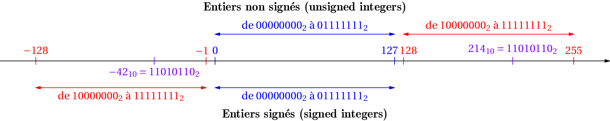

Thème 1 - Représentation des données - Types et valeurs de bases⚓︎
| 07 | Ecriture d'un entier relatifs en binaire |
|---|
Programme 1ere
| Contenus | Capacités attendues | Commentaires |
|---|---|---|
| Représentation binaire d’un entier relatif | Évaluer le nombre de bits nécessaires à l’écriture en base 2 d’un entier, de la somme ou du produit de deux nombres entiers. Utiliser le complément à 2. | Il s’agit de décrire les tailles courantes des entiers (8, 16, 32 ou 64 bits). Il est possible d’évoquer la représentation des entiers de taille arbitraire de Python. |
⚠ Attention ⚠
La manière dont les nombres (entiers, non-entiers, positifs, négatifs...) sont traités par un langage de programmation est spécifique à ce langage.
Dans toute la suite de ce cours, pour simplifier, nous considérerons que les nombres sont codés sur 1 octet seulement. Ce qui ne correspond pas à la réalité, mais permet de comprendre les notions essentielles.
Les nombres entiers en binaire non signé⚓︎
L'expression "non signé" signifie que la contrainte du signe n'existe pas : tous les nombres sont considérés comme étant positifs.
Au chapitre T1.1, nous avons vu comment représenter un nombre entier positif en notation binaire.
Sur un octet, le nombre minimal qu'on puisse coder est 00000000 soit l'entier naturel 0.
Le nombre maximal qu'on puisse coder est 11111111 soit l'entier naturel 255.
Exercice 1
- Quel est le plus grand entier non signé codable sur 16 bits ?
- ... sur 32 bits ?
- ... \(n\) bits ?
- Le plus grand entier non signé sut 16 bits est :
\(1111 1111 1111 1111\) soit \(N=1+2+2^2+2^3+\dots+2^{15}= 2^{16}-1=65535\) (Voir cours de spécialité maths en première) - \(N=1+2+2^2+2^3+\dots+2^{31}= 2^{31}-1=4294967295\)
- Pour tout \(n \in \mathbb{N}\), \(1+2+2^2+2^3+\dots+2^{n-1}=2^{n}-1\) (formule de la somme des termes d'une suite géométrique de raison 2).
Python et les entiers 
Depuis la version 3 du langage Python, il n'y a plus de taille maximale pour les entiers en Python.
Ceci implique que la taille nécessaire au codage de l'entier est allouée dynamiquement par Python (avec pour seule limite celle de la mémoire disponible).
Exercice 2
- Effectuer la somme des deux nombres binaires
00001101et00001011. - Vérifier que le résultat est cohérent en base 10.
Les nombres entiers en binaire signé⚓︎
La fausse bonne idée⚓︎
Comment différencier les nombres positifs des nombres négatifs ?
L'idée naturelle est de réserver 1 bit pour le signe de l'entier (+ ou -).
Signe d'un entier relatif
Par exemple, on peut décréter que le premier bit (appelé bit de poids fort) sera le bit de signe :
- par un
0pour le \(+\) : ainsi la représentation des entiers positifs est inchangée; - par un
1pour le \(-\).
Problème : Taille en bits d'un entier
6 se coderait alors en 0110 et -6 en 1110 sur 4 bits. Mais sur 8 bits 1110 représente l'entier 14 ! (on complète 0000 1110).
Dans ce cas 0000 0110 et -6 en 1000 0110 sur 8 bits
Pour lever cette ambiguité, il faut décider :
- de la taille du mot binaire qui va représenter l'entier, c'est-à-dire le nombre de bits;
- d'une façon efficace de représenter les nombres négatifs.
Taille en bits d'un entier
Pour représenter un nombre entier relatif, on a donc besoin de fixer un nombre n de bits sur lequel le coder.
En général, n est une des valeurs suivantes : 8, 16, 32 ou 64 (1, 2, 4 ou 8 octets). Cela dépend du langage de programmation utilisé et de l'architecture matérielle de l'ordinateur.
Le bit de poids fort représente donc le signe et les n-1 bits suivants la valeur absolue du nombre.
Donc sur 8 bits, l'entier 6 est codé par 0|000 0110. Et on serait tenté de coder son opposé -6 par 1|000 0110, n'est-ce pas?
Problèmes :
Au moins deux (gros) inconvénients à cette méthode:
- Le nombre 0 serait codé par
0|000 0000et par1|000 0000. Deux représentations pour un même nombre, ça ne sent pas bon. - Plus grave : l'addition telle qu'on la connaît ne fonctionnerait plus. Posez par exemple 6 + (-6) ...
+ 1 0 0 0 0 1 1 0
1 0 0 0 1 1 0 0
On n'obtient pas 0 mais \(-12\).
Moralité :
Indiquer le signe d'un nombre par son premier bit est une fausse bonne idée, il faut trouver autre chose.
Complément à 2⚓︎
À la recherche de l'opposé d'un nombre⚓︎
Idée :
Plutôt que de chercher à écrire directement le nombre \(-3\), nous allons chercher à déterminer ce qu'il faut ajouter à \((+3)\) pour obtenir 0.
Que faut-il ajouter au nombre \((+3)\) pour obtenir 0 ?
+ ? ? ? ? ? ? ? ?
0 0 0 0 0 0 0 0
Exercice 3
A vous de déterminer ce nombre.
L'idée naturelle est de commencer par la droite, en essayant de «fabriquer du zéro» en choisissant le bon bit à ajouter :
+ 1 1 1 1 1 0 1 0
0 0 0 0 0 0 0 0
On arrive bien à fabriquer des 0 sur tout notre octet, mais que devient la retenue (en anglais carry) de 1 qui déborde de notre octet ?
Réponse : rien ! Elle sera perdue et c'est une très bonne nouvelle. Ce nombre sera donc considéré comme un 0 : nous avons trouvé comment coder \(-6\).
Le nombre \(-6\) s'écrit donc 11111010.
Comment, à partir du nombre 00000110, aurait-on pu le trouver directement (sans raisonner de proche en proche) ?
On peut remarquer qu'en inversant chaque bit du nombre de départ 00000110, on obtient 11111001, qui appelé le complément à 2 du nombre 00000110.
Il ne reste donc plus qu'à ajouter 1 à ce nombre 11111010 pour obtenir le nombre cherché, 11111010
 ce nombre
ce nombre 11111010 représente 250 en codage non signé. Il est donc nécessaire, lorsqu'on représente un nombre, de savoir si les nombres manipulés seront des entiers naturels (non signés) ou bien relatifs (signés).
Conclusion : écriture de l'opposé d'un nombre positif⚓︎
Pour obtenir le complément à 2 d'un entier négatif
- On prend le complément à 2 de chaque bit du nombre de départ
- on code sa valeur absolue en binaire;
- on inverse tous les bits (on remplace les
0par des1et les1par des0);
- On ajoute 1 au nombre obtenu.
Exercice 4
Donner l'écriture binaire sur un octet du nombre \(-13\).
Commençons par écrire le nombre 13 en binaire. Il s'écrit  00001101.
- en prenant le complément à 2 de chaque bit, on obtient
11110010. - en ajoutant 1 à ce dernier nombre, on obtient
11110011.
Le nombre \(-13\) s'écrit donc 11110011.
Exercice 5
Donner l'écriture binaire sur un octet du nombre \(-57\).
Exercice 6
Donner l'écriture binaire sur un octet du nombre \(-17\).
Bilan : Complément à 2 :⚓︎
On adopte donc une autre méthode, qui consiste à représenter un entier relatif par un entier naturel.
En binaire non signé : sur 8 bits, on peut représenter tous les entiers positifs de 0 à 255.
Ceux qui ont un bit de poids fort égal à 0 correspondent aux entiers de 0 à 127 et ceux qui ont un bit de poids fort égal à 1 correspondent aux nombres de 128 à 255.
En binaire signé : toujours sur 8 bits, les nombres de 0 à 127 conservent la même représentation (positifs, car avec 0 en bit de poids fort). En revanche, les écritures binaires avec un 1 en bit de poids fort représentent les entiers négatifs de -128 à -1.
Ainsi sur 8 bits, on représente à nouveau 255 valeurs : de -128 à +127, c'est-à-dire de \(-2^7\) à \(2^7 -1\). Et puisque le bit de poids fort est réservé au signe, il est logique que la valeur absolue soit inférieure à 128 puisqu'on ne dispose plus que de 7 bits...

On représente donc l'entier \(-1\) par 11111111 en binaire sur 8 bits. C'est sa notation en complément à 2 (ou plutôt \(2^n\)).
Écrire la représentation binaire d'un entier négatif
Pour obtenir le complément à 2 d'un entier négatif:
- on code sa valeur absolue en binaire;
- on inverse tous les bits (on remplace les
0par des1et les1par des0); - on ajoute 1.
Par exemple:
- \(-6\) s'écrit
11111010sur 8 bits: \(6_{10} = 0000 0110_2 \rightarrow 1111 1001_2 \rightarrow 1111 1010_2\). - \(-42\) s'écrit
11010110sur 8 bits: \(42_{10} = 0010 1010_2 \rightarrow 1101 0101_2 \rightarrow 1101 0110_2\).
La représentation binaire d'un entier \(x\) négatif sur \(n\) bits est celle de l'entier naturel (non signé) \(x + 2^n\).
Par exemple pour \(x=-42\), on représente \(-42+256=214\) en binaire non signé, c'est-à-dire 11010110.
Dépassement de capacité
On ne peut coder qu'un nombre fini d'entiers selon la valeur de \(n\): entre \(-2^{n-1}\) et \(2^{n-1}-1\).
Tout calcul sur des entiers dont le résultat ne fait pas partie de cet intervalle donnera un résultat faux: il sera tronqué sur \(n\) bits! On parle de dépassement de capacité , overflow en anglais.
En Python, tous les entiers sont signés. Contrairement à certains langages de programmation, le type entier non signé n'existe pas nativement. Par défaut les entiers sont codés sur 64 bits (ou 32 bits sur les machines 32 bits), ce qui laisse un peu de marge.
Travail inverse : passage du binaire signé au nombre relatif⚓︎
Considérons le nombre 11101101, codé en binaire signé. À quel nombre relatif correspond-il ?
- On observe son bit de poids fort : ici 1, donc ce nombre est négatif. Si ce bit est égal à 0, le nombre codé est positif, il suffit d'opérer une conversion binaire classique.
- Comme ce nombre est négatif, il va falloir inverser le protocole précédent. On commence donc par enlever 1 au nombre proposé. On trouve
11101100. - On prend ensuite le complément à 2 de chaque bit. On trouve
00010011. - On convertit en base 10 le nombre obtenu, qui était donc 19.
- Le nombre initial était donc \(-19\).
Exercice 7
En binaire signé, à quel nombre correspond 11110001?
11110001 - 1 = 11110000. En prenant le complément à 2, on trouve 00001111, qui vaut 15. Le nombre 11110001 représente donc \(-15\).
Exercice 8
- En binaire signé, quel est le plus grand nombre que l'on puisse écrire sur 16 bits ?
- Quel est le plus petit nombre que l'on puisse écrire sur 16 bits ?
- Au total, combien de nombres différents peuvent être écrits en binaire signé sur 16 bits?
- Le plus grand nombre est
0111 1111 1111 1111, soit \(+32 767\). - Le plus petit nombre est
1000 0000 0000 0000.1000 0000 0000 0000-1=0111 1111 1111 1111. Donc le nombre minimal est \(-32768\). - Il y a 32768 nombres négatifs (de \(-32768\) à \(-1\)), le nombre 0, puis 326767 nombres positifs (de 1 à 32767). Il y a donc 65536 nombres au total, comme en binaire non signé.
Le codage des entiers, une source intarissable d'erreurs...⚓︎
Le vol 501 d'Ariane 5⚓︎

Le 04 juin 1996, le vol inaugural d'Ariane 5 a malheureusement fini dans une gerbe d'étincelles.
En cause : un code prévu pour Ariane 4 avait été gardé pour le nouveau modèle Ariane 5. Dans ce «vieux» code, une donnée issue d'un capteur (le capteur de vitesse horizontale) était codé sur 8 bits. La valeur maximale acceptable de cette donnée était donc 255.
Or, Ariane 5 étant beaucoup plus puissante, le capteur de vitesse horizontale a renvoyé, au bout de 30 secondes, la valeur 300 : cette valeur a provoqué un dépassement des 8 bits prévus et a donné un résultat absurde. L'ordinateur de bord a cru que la fusée était en train de se coucher et a violemment orienté les tuyères de propulsion pour redresser Ariane 5, alors que celle-ci s'élevait pourtant bien verticalement... Ariane 5 a alors brusquement pivoté avant d'exploser.
Cette catastrophe (150 millions d'euros et des années de travail perdus) a fait prendre conscience à la communauté scientifique de l'importance de faire des tests logiciels toujours plus poussés : ce n'est pas parce qu'un code marche dans un environnement donné qu'il marchera de la même manière dans d'autres conditions...
Illustration en Python
En Python, tous les entiers sont signés. Contrairement à certains langages de programmation, le type entier non signé n'existe pas nativement. Par défaut les entiers sont codés sur 64 bits (ou 32 bits sur les machines 32 bits), ce qui laisse un peu de marge.
| üêç Script Python | |
|---|---|
1 2 3 | |
À l'aide du module numpy, effectuer en console les calculs suivants:
- 127 + 1
- 127 + 2
- 127 + 127
Par exemple pour le premier calcul :
>>> import numpy
>>> numpy.int8(127) + numpy.int8(1)
Le bug de l'année 2038⚓︎

Expliquons ce (superbe) gif issu de la page Wikipedia Bug de l'an 2038.
Lorsqu'on demande à Python l'heure qu'il est, par la fonction time() du module time, voici ce qu'il répond :
>>> import time
>>> time.time()
1664110696.4503427
Il nous renvoie le nombre de secondes écoulées depuis le 1er janvier 1970 à 00h00. On appelle cela l'heure POSIX ou l'heure UNIX. Au 25 septembre 2022, il s'en donc écoulé environ 1,6 milliards.
Dans beaucoup de systèmes informatiques, ce nombre de secondes est codé par un entier signé sur 32 bits.
Le nombre maximum de secondes qui peut être représenté est donc 01111111 11111111 11111111 11111111
>>> int('01111111111111111111111111111111', 2)
2147483647
Ce nombre représente un peu plus de 2 milliards de secondes... En les comptant depuis le 01/01/1970 00h00m00s, on arrive au 19/01/2038 à 03h14m07s.
À la seconde d'après, la represéntation binaire du temps sera 10000000 00000000 00000000 00000000, qui sera interprété comme le nombre négatif −2147483648, et qui ramènera donc les horloges au 13 décembre 1901...
Vous pourrez lire sur la page Wikipedia citée plus haut plus d'informations sur ce problème.
Exercice 9
Reprendre le calcul et le raisonnement sur un code en 64 bits.
Exercices⚓︎
Exercice 10
Quel est l'intervalle de nombres entiers relatifs qu'on peut représenter:
- Sur 4 bits?
- Sur 32 bits?
- Sur 64 bits?
On utilise l'encadrement donné dans l'encadré précédent avec la valeur de \(n\) correspondante:
- Pour \(n=4\), entre -8 et 7
- Pour \(n=16\), entre -32768 et 32767
- Pour \(n=64\), entre -9223372036854775808 et 9223372036854775801
Exercice 11
- Convertir en complément à 2 les nombres 12 et -53.
- Effectuer l'addition en binaire de ces deux nombres, et vérifier que le résultat est correct.
- Comme 12 est positif, sa représentation binaire est
00001100.
En revanche, -53 est négatif. Donc:
- on écrit sa valeur absolue, 53, en binaire:
00110101 - on effectue le complément à 2 en inversant les bits :
11001010 - on ajoute 1 et on obtient
11001011
2. L'addition bit par bit donne : 11010111
Le résultat de 12 + (-53) est -41. Or sa représentation est
- valeur absolue :
00101001 - complément à 2 :
11010110 - +1 :
11010111
On obtient bien le même résultat.
Exercice 12
Quels sont les entiers relatifs dont la représentation binaire en complément à 2 (sur 8 bits) est:
0110011110011001
-
L'écriture binaire commence par un 0, c'est donc un positif. On fait «comme d'habitude»:
01100111est l'écriture binaire de 103. -
L'écriture binaire commence par un 1, c'est donc un négatif.
On effectue les opérations dans l'autre sens:
- On soustrait 1 : on obtient
10011000 - complément à 2 : on obtient
01100111 - on récupère la valeur absolue : 103
Le nombre est donc -103.